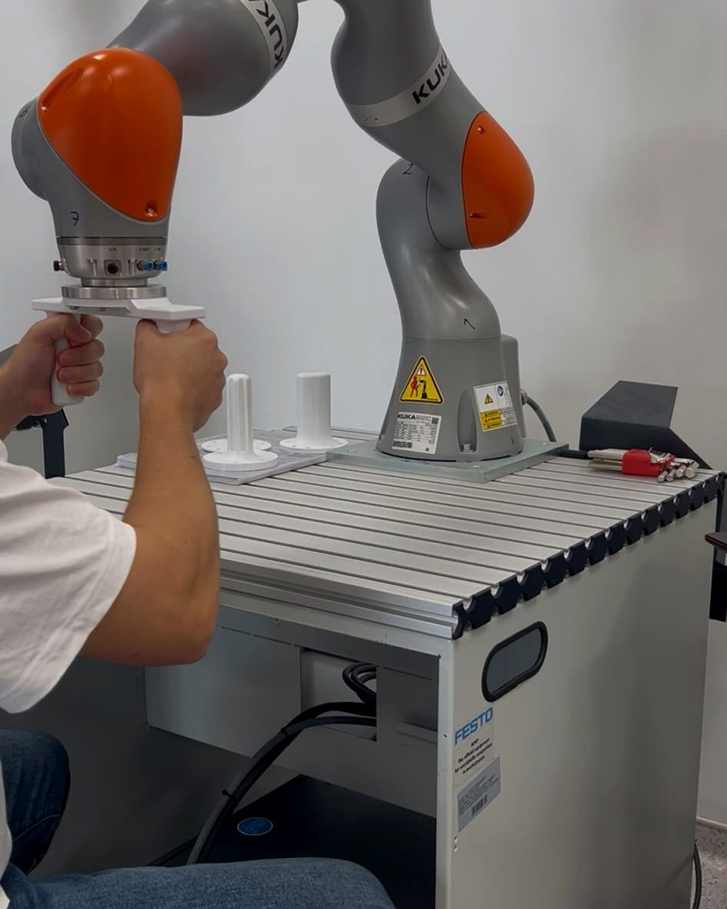

Yeni bir aleti ilk kez kullandığımızda hareketlerimiz beceriksizdir; birkaç denemede düzelir. Bu düzelmenin nasıl olduğu, motor öğrenme alanının hâlâ tartıştığı bir sorudur.
Bu çalışmada, iki elinizle tuttuğunuz bir robot kolu aracılığıyla ekrandaki bir şekli hareketli bir hedefe çakıştırmaya çalışacaksınız. Biz de pratik ilerledikçe hareketlerinizi nasıl düzenlediğinizi ölçeceğiz.
Çalışma, ODTÜ Makina Mühendisliği Bölümü'nde yürütülen bir yüksek lisans tezi kapsamındadır ve ODTÜ İnsan Araştırmaları Etik Kurulu onayıyla yapılmaktadır.
Oturumda ne yapacaksınız
Bir sandalyede oturacak, robot kolun ucundaki iki tutamağı iki elinizle kavrayacaksınız. Kolu hareket ettirerek ekrandaki avatarı, yavaşça hareket eden lideri takip edecek şekilde yönlendireceksiniz.
Oyun, her biri yaklaşık bir buçuk dakika süren 24 denemeden oluşur. Her denemenin ardından koltukta oturarak dinlendiğiniz kısa bir ara, oturumun ortasında ise 15 dakikalık bir mola vardır. Toplam 90 dakikanın yalnızca 33 dakikası oyundur; gerisi mola ve hazırlıktır.
Her denemenin sonunda yalnızca size gösterilen bir başarı puanı göreceksiniz. Bu puan başka katılımcılarla karşılaştırılmaz ve kimseyle paylaşılmaz.
Robot kendi başına hareket başlatmaz; yalnızca sizin uyguladığınız kuvvete tepki verir. Oyun sırasında tutamakta zaman zaman kısa ve küçük bir itme hissedebilirsiniz; bu da ölçümün planlı bir parçasıdır.

Kısaca
Kimler katılabilir
- 18–40 yaş arası, iki elini de kullanabilen sağlıklı yetişkinler
- Bu oyunu daha önce oynamamış olanlar
El, bilek, kol, omuz veya boyun bölgesinde ağrı, yaralanma ya da hareket kısıtlılığı olanlar ile bayılma veya nöbet öyküsü bulunanlar katılamaz.
Kullanılan robot (KUKA LBR iiwa), insanla aynı çalışma alanını paylaşmak üzere tasarlanmış bir işbirlikçi robottur. Hızı, hareket alanı ve uygulayabileceği kuvvet yazılımla sınırlandırılmıştır; acil durdurma düğmesi oturum boyunca uygulayıcının elinin altındadır. İstediğiniz anda ellerinizi çekerek oturumu durdurabilirsiniz.
Nerede
NÖROM — Nörorobotik ve Nörorehabilitasyon Laboratuvarı
Emniyet Mahallesi, Milas Sokak No: 1
06560 Yenimahalle / Ankara
Laboratuvara nasıl geleceğinizi ve hangi kapıdan gireceğinizi randevu verirken ayrıca yazacağım.
Katılmak ya da soru sormak için
Kısa bir mesaj yeterli; size uygun saatleri birlikte ayarlarız.
Katılım tamamen gönüllüdür. Katılmamanın ya da oturumu yarıda bırakmanın sizin için hiçbir olumsuz sonucu olmaz. Toplanan kayıtlarda adınız yer almaz; verileriniz yalnızca bir kod numarasıyla saklanır ve bilimsel yayımlarda yalnızca toplu hâlde kullanılır.